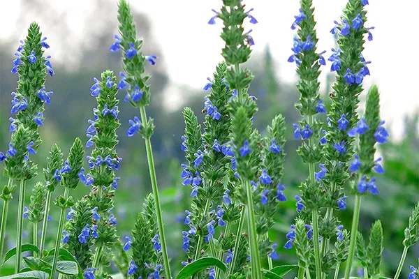

Семена чиа — состав, польза и вред
Семена чиа — суперфуд и лидер по содержанию полезных веществ на грамм продукта. В их составе есть растворимая клетчатка (порядка 30% от массы зерен), большое количество растительных жиров омега-3 — а также магний и другие важные для обмена веществ минералы.
Исследования показывают, что семена чиа снижают количество микровоспалений в организме и положительно влияют на нормализацию уровня холестерина в крови. Ниже в материале вы найдете информацию об их калорийности, составе БЖУ, а также отзывы о применении семян чиа.
Семена чиа — что это?

Семена чиа — это зерна растения чиа (salvia hispanica или “шалфей испанский”), однолетнего цветка, достигающего высотой до 2 м. Родина — Центральная Америка. До испанской колонизации семена чиа, наравне со спирулиной и кукурузой, являлись ключевым продуктом в рационе ацтеков.
На долгое время польза чиа была забыта, поскольку растение считалось вымершим. Однако в 1980-х годах его обнаружили в удаленных горах Парагвая. Сегодня семена чиа популярны не только в странах Южной Америки, но и в Европе. Также растение успешно выращивают в России.
Полезные свойства чиа подтверждается как научными исследованиями, так и отзывами. Они богаты кальцием, железом, цинком, магнием, марганцем и фосфором. Кроме этого, зерна чиа содержат растительные жиры Омега-3 и уникальный вид растворимой клетчатки, улучшающей работу желудка.
Как употреблять?
Наибольшую пользу семена чиа несут в виде муки — поскольку зерна покрыты твердой оболочкой, в обычном виде они перевариваются лишь частично. Практика говорит о том, что проще всего использовать чиа при приготовлении овощных и фруктовых смузи, взбивая их блендером.
Кроме этого, семена чиа — это крайне полезный ингредиент для выпечки домашнего цельнозернового хлеба. Благодаря высокому содержанию растворимой клетчатки перемолотые зерна добавляет хлебу объем и неповторимый вкус, снижая гликемический индекс.
Также семена чиа обладают полезными свойствами и в виде масла — оно отличается высоким содержанием растительных кислот Омега-3, а также натуральных веществ, препятствующих окислению этих кислот. Масло чиа используется в косметических средствах, помогая бороться с прыщами.
Польза и вред
Исследования говорят о том, что семена чиа, применяемые ежедневно, помогают снижать количество микровоспалений в организме¹. Это влияет на понижение артериального давления и помогает поддерживать холестерин в норме. Отметим и другие полезные свойства чиа:
1. Содержат много минералов
Семена чиа — отличный источник важных для обмена веществ магния и кальция. В 100 г чиа содержится 94% дневной нормы магния, 63% нормы кальция и 59% нормы железа. Напомним, что магний восстанавливает нервную систему, а железо полезно для кровеносной системы — что особенно важно женщинам в период критических дней.
2. Снижают уровень холестерина
За счет содержания редкого типа растворимой клетчатки, семена чиа могут влиять на уровень холестерина в крови, снижая количество “плохого” холестерина. Роль играет и то, что в их составе содержатся мощные антиоксиданты, повышающие уровень усвоения омега-3.
3. Содержат омега-3
Семена чиа — это один из лидеров по содержанию растительных Омега-3. Они полезны в борьбе с микровоспалениями и ускоряют скорость восстановления мышц у мужчин-спортсменов, а также помогают поддерживать оптимальную работу иммунной системы. Лучшей формой приема чиа в этом случае станет масло.
4. Источник незаменимых аминокислот
Белковый профиль семян чиа является полным — в них содержатся важные для обмена веществ незаменимые аминокислоты лизин, метионин и другие. Также полезные свойства чиа заключается в наличии в составе аминокислоты триптофан, необходимой для синтеза серотонина.
5. Содержат антиоксиданты
Входящие в состав семян хлорогеновая кислота и кофейная кислота являются сильными природными антиоксидантами. Также в чиа содержатся фитонутриенты мирицетин, кверцетин и кемпферол — они полезны для функций иммунитета и повышают способность тела бороться с повреждающими факторами различной природы.
6. Полезны для здоровья кишечника
Семена чиа обладают свойствами пробиотика — то есть, улучшают состояние микрофлоры кишечника, выступая пищей для полезных бактерий. Кроме этого, чиа безопасно слабят (для этого их нужно принимать на ночь в количестве 2-3 столовых ложек, запивая водой), не имея при этом побочных эффектов и противопоказаний.
7. Уменьшают чувство голода
Поскольку семена чиа содержат много клетчатки, они быстро избавляют от голода и обеспечивают долговременное чувство насыщения. Вы можете держать пакетик с зернами чиа в сумке, по необходимости запивая горсть семян водой — методика древних Ацтеков.
8. Легко вырастить в домашних условиях
Семена чиа можно прорастить в домашних условиях — причем быстрее, чем побеги сои. Пророщенные зерна употребляются в пищу, служа источником хлорофилла. В свою очередь, растение чиа, родственное шалфею и мяте, красиво цветет и не требует особого ухода — при высадке в открытый грунт плодоносит уже через год.